Protocol: epidermal cell counts
Purpose
Estimate number of epidermal cells per area from light microscope images using FIJI.
Prerequisites
- Install FIJI
Steps
1. Open FIJI from Dock
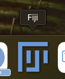
2. Open image for measurements
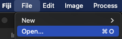 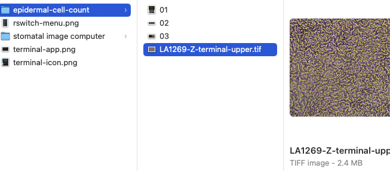
3. Configure multi-point tool options
- right-click on multi-point tool button in the FIJI tool bar
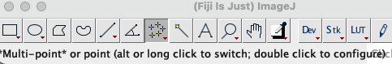
Select the following options:
- Type: Dot
- Color: Yellow
- Size: Extra large
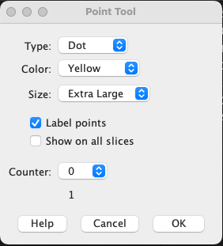
- Click “OK” button when properly configured
4. Open ROI manager
- ROI stands for “Region of Interest”
- This enables you to save your work so you can stop and restart and we can verify work later
- Select “Analyze > Tools > ROI Manager…”
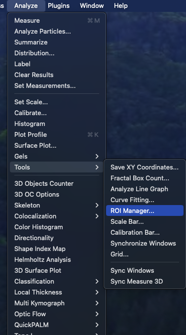
PAUSE and read carefully
If you are starting a new image, keep reading below. If you are restarting counts on an image you have already begun, skip down to “Restarting images”.
Starting new images
5. Count epidermal cells
- Check that multi-point tool is selected
- Place a point (yellow dot) in every epidermal (see example below)
- Left-clicking mouse in an empty region will place a new point
- Do not place a point in stomata, trichomes, etc.
- Include partial cells cut off by edge
- Do your best in regions that are out of focus
- Use the Zoom tool as needed to focus on smaller regions
- You can fix mistakes by moving around individual points with your mouse
- Example:
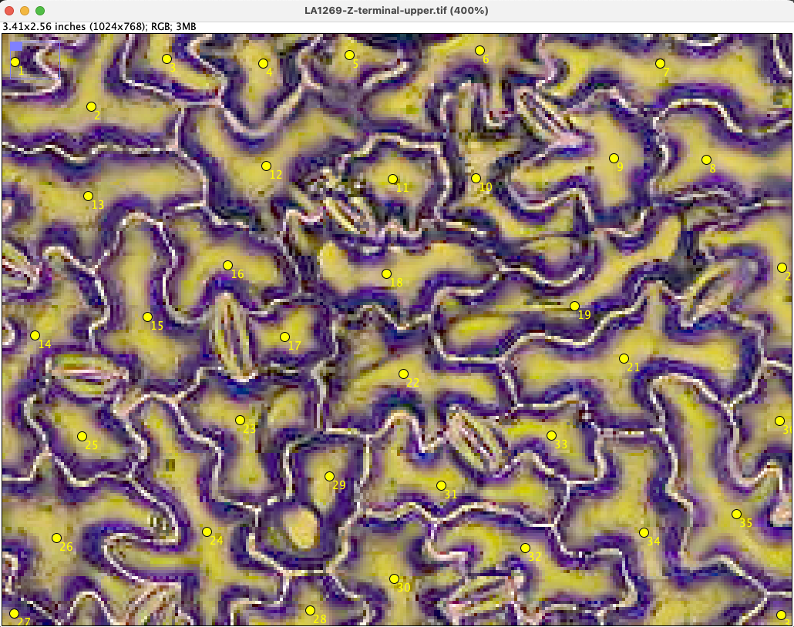
6. Save your work
- When you are ready to save your work, add points to ROI manager by clicking “Add [t]” button or pressing “t” on the keyboard
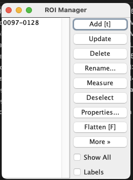
- To save, select “More > Save…” in the ROI Manager
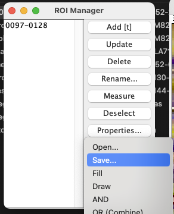
- Save using the image file name, but with “.roi” instead of “.tif” extension
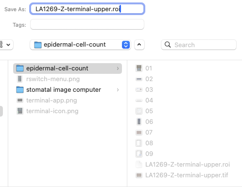
7. Enter final cell count and notes in Excel spreadsheet
- Label: image file name (exclude the “.tif” extension)
- n: epidermal cell count
- notes: any notes on image quality or concerns
Save spreadsheet
Restarting images
8. Open and update saved ROI
- To open, select “More > Open…” in the ROI Manager
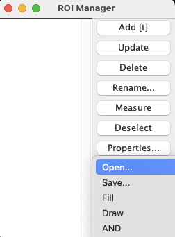
- Continue counting epidermal cells
- To update the ROI, make sure ROI is selected and press “Update” in ROI Manager
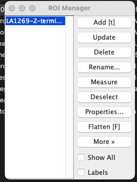
- Follow instructions above to save ROI and record data